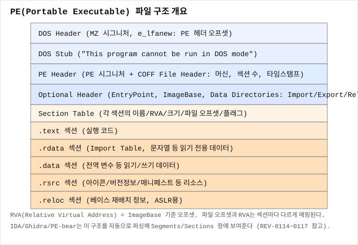

PE 파일 구조 한 번에 보기
한 줄 요약
Windows의 모든 실행 파일(.exe, .dll, .sys, .ocx)은 PE(Portable Executable) 포맷을 따르며, 이 포맷은 "DOS Header → DOS Stub → NT Header(COFF Header + Optional Header) → Section Table → 각 섹션 데이터"라는 정해진 순서로 쌓인 구조라서, 이 순서만 외우고 있으면 어떤 PE 파일이든 헥스에디터 하나만으로도 큰 그림을 읽을 수 있다.
언제 검색해야 하나
- 처음으로
.exe파일을 PE-bear나 헥스에디터로 열었는데, 상단에 나열된 항목들(DOS Header,NT Headers,Section Headers,Import Table...)이 서로 어떤 관계인지 감이 안 잡힐 때 - IDA가 파일을 로드하면서 자동으로 인식한 섹션 이름(
.text,.data,.rdata...)이 어디서 나온 정보인지 궁금할 때 - "PE 헤더"라는 말이 정확히 어느 범위를 가리키는지 헷갈릴 때(DOS Header도 포함인지, NT Header만인지)
- PE 분석을 체계적으로 시작하기 전에, 전체 구조를 한 번 정리하고 세부 항목(DOS Header, Optional Header, Section Table, Import/Export)별로 깊이 들어갈 준비를 하고 싶을 때
핵심 개념
PE 파일이 왜 이런 구조를 갖는가
PE(Portable Executable)는 Windows NT 계열이 채택한 실행 파일 포맷으로, MS-DOS 시절의 MZ 실행 파일 포맷과의 하위 호환성을 유지하면서 32/64비트 실행 파일에 필요한 훨씬 많은 정보(섹션, 임포트, 익스포트, 리소스, 재배치 등)를 담기 위해 설계됐다. 그 결과 PE 파일은 "옛날 DOS 실행 파일 헤더"와 "진짜 Windows용 헤더"가 이중으로 겹쳐 있는 독특한 구조를 갖는다. 이 역사적 배경을 알면 왜 굳이 IMAGE_DOS_HEADER라는, 요즘 관점에서는 거의 쓸모없어 보이는 구조체가 파일 맨 앞에 여전히 남아 있는지 납득이 된다.
전체 레이아웃을 순서대로 그려보면
파일을 앞에서부터 순서대로 나열하면 다음과 같다.

오프셋 0x00 ┌──────────────────────────────┐
│ IMAGE_DOS_HEADER (64바이트) │ "MZ" 매직으로 시작
├──────────────────────────────┤
│ DOS Stub │ "This program cannot be run..."
├──────────────────────────────┤
e_lfanew──> │ IMAGE_NT_HEADERS │ "PE\0\0" 시그니처
│ ├─ FileHeader (COFF Header) │ 섹션 개수, 아키텍처 등
│ └─ OptionalHeader │ EntryPoint, ImageBase, DataDirectory 등
├──────────────────────────────┤
│ Section Table │ IMAGE_SECTION_HEADER 배열
│ (섹션 개수만큼 반복, 40바이트씩) │
├──────────────────────────────┤
│ .text 섹션 raw 데이터 │ 실행 코드
│ .rdata 섹션 raw 데이터 │ 임포트 테이블, 문자열 등
│ .data 섹션 raw 데이터 │ 전역 변수
│ .rsrc 섹션 raw 데이터 │ 아이콘, 버전 정보 등
│ ... │
└──────────────────────────────┘여기서 핵심은 두 가지다. 첫째, 헤더 부분(DOS Header ~ Section Table)은 파일 맨 앞에 모여 있고, 실제 코드/데이터는 그 뒤에 섹션 단위로 나뉘어 저장된다. 둘째, 각 섹션이 파일의 몇 바이트 지점에 있는지, 메모리에 로드됐을 때 어느 주소에 매핑되는지는 전부 Section Table이 알려준다 — 이 매핑 정보 없이는 파일을 읽어도 코드가 어디 있는지 알 방법이 없다.
네 덩어리로 나눠서 이해하기
- DOS Header + DOS Stub —
MZ매직으로 시작하는, DOS 시절 흔적이 남은 부분. 요즘 실행 관점에서 중요한 건 딱 하나,e_lfanew필드뿐이다. 이 필드가 "진짜 PE 헤더가 파일 몇 바이트 지점에서 시작하는지"를 가리킨다. 자세한 내용은 REV-0115 DOS Header와 MZ 시그니처에서 다룬다. - NT Header(
IMAGE_NT_HEADERS) —PE\0\0시그니처로 시작하며, 내부에FileHeader(COFF Header, 섹션 개수·아키텍처·타임스탬프 등)와OptionalHeader(진입점 주소, ImageBase, 각종 정렬 값,DataDirectory배열)를 담고 있다. 이름은 "Optional"이지만 실행 파일이라면 사실상 필수다. 자세한 내용은 REV-0116 PE Header COFF Optional Header 읽기에서 다룬다. - Section Table(
IMAGE_SECTION_HEADER배열) — 각 섹션의 이름, 메모리상 크기·주소(VirtualSize,VirtualAddress), 파일상 크기·위치(SizeOfRawData,PointerToRawData), 그리고 실행/쓰기/읽기 권한을 나타내는Characteristics플래그를 담은 40바이트짜리 항목들의 배열. 자세한 내용은 REV-0117 PE Section Table 읽기에서 다룬다. - 섹션 raw 데이터 — 실제 기계어 코드(
.text), 초기화된 전역 변수(.data), 임포트/익스포트 테이블과 문자열이 흔히 모이는 읽기 전용 데이터(.rdata), 리소스(.rsrc) 등이 여기 저장된다. Import/Export 테이블 자체의 구조는 REV-0119 Import Table에서 중요한 API 찾기, REV-0120 Export Table과 DLL 함수에서 따로 다룬다.
PE32 vs PE32+
PE는 32비트용(PE32)과 64비트용(PE32+)이라는 두 가지 변형이 있다. 두 변형은 IMAGE_NT_HEADERS의 OptionalHeader.Magic 필드 값으로 구분된다.
0x10B→ PE32 (32비트,ImageBase/포인터류 필드가 4바이트)0x20B→ PE32+ (64비트,ImageBase/포인터류 필드가 8바이트)
DLL과 EXE는 파일 포맷 구조 자체는 동일하고, FileHeader.Characteristics에 IMAGE_FILE_DLL 플래그가 켜져 있는지 여부와 Export Table의 존재 여부 정도로 구분된다.
오프셋 0과 오프셋 e_lfanew, 두 개의 "시작점"이 있다는 게 핵심
PE 파일을 처음 볼 때 가장 헷갈리는 지점은 "헤더가 정확히 어디서 시작하나"라는 질문이다. 답은 두 개다. 파일 오프셋 0x00에는 항상 DOS Header가 있고, DOS Header 안의 e_lfanew 필드가 가리키는 오프셋(보통 0x80~0xF0 근처, 도구/컴파일러 설정에 따라 다름)에 진짜 PE 헤더인 IMAGE_NT_HEADERS가 있다. 이 이중 구조를 모르고 무작정 파일 맨 앞부터 IMAGE_NT_HEADERS 구조체를 읽으려 하면 완전히 엉뚱한 바이트를 읽게 된다.
화면/코드에서 보이는 징후
- 헥스에디터로
.exe를 열었을 때 맨 앞 2바이트가4D 5A(MZ) - 파일 중간 어딘가에
50 45 00 00(PE\0\0)이 보임 - PE-bear 좌측 트리에
DOS Header,DOS Stub,NT Headers,Section Headers,Import Directory,Export Directory등이 순서대로 나열되어 있음 - IDA가 파일을 열자마자 자동으로
.text,.rdata,.data등 섹션을 인식해 Segments 창에 표시함
가장 먼저 할 것
새로운 PE 파일을 받으면 코드 분석에 들어가기 전에 PE-bear(또는 Detect It Easy)로 열어서 다음 순서로 3분 안에 훑어본다. (1) DOS Header에서 e_lfanew 확인, (2) NT Header의 FileHeader.Machine으로 x86인지 x64인지 확인, (3) OptionalHeader.AddressOfEntryPoint와 ImageBase 확인, (4) Section Table에서 섹션 개수와 각 섹션 이름·권한 확인, (5) Import Directory에서 어떤 DLL을 로드하는지 훑어보기. 이 다섯 가지만 확인해도 IDA를 열기 전에 "이게 대략 뭘 하는 프로그램인지" 감을 잡을 수 있다.
단계별 절차
1) 파일 타입부터 확인
PE-bear로 파일을 드래그 앤 드롭하여 연다.
또는: Detect It Easy(DIE)로 열어서 상단에 "PE64" / "PE32" 표시와 컴파일러/패커 추정 정보를 확인한다.2) DOS Header → e_lfanew 확인 좌측 트리에서 DOS Header를 클릭하면 e_magic(=MZ)과 e_lfanew 값이 보인다. 이 값이 다음 단계인 NT Header가 시작하는 파일 오프셋이다.
3) NT Headers → FileHeader / OptionalHeader 확인 FileHeader.Machine이 0x8664이면 x64, 0x14C이면 x86(I386)이다. FileHeader.NumberOfSections로 섹션 개수를 확인하고, OptionalHeader.AddressOfEntryPoint(RVA)와 OptionalHeader.ImageBase를 적어둔다.
4) Section Headers 확인 각 섹션의 Name, VirtualAddress, VirtualSize, PointerToRawData, SizeOfRawData, Characteristics를 한 줄씩 훑는다. .text는 보통 실행 가능(IMAGE_SCN_MEM_EXECUTE), .data는 쓰기 가능(IMAGE_SCN_MEM_WRITE), .rdata는 읽기 전용이다.
5) Import/Export 확인 좌측 트리의 Import Directory, Export Directory를 클릭해서 이 파일이 어떤 외부 DLL/함수에 의존하는지, 반대로 어떤 함수를 외부에 제공하는지 확인한다.
명령어/단축키
PE-bear: 파일을 창에 드래그 앤 드롭 → 좌측 트리로 각 헤더 이동
PE-bear: Ctrl+F로 특정 바이트 패턴 검색
x64dbg: File → Open으로 실행 후 CPU 창에서 진입점(Entry Point)로 자동 이동
Detect It Easy(DIE): 파일 드래그 앤 드롭 → 상단에 파일 타입/컴파일러/패커 요약 표시출력 해석
- PE-bear 상단에 "PE32" 표시 → 32비트 실행 파일,
OptionalHeader.Magic == 0x10B - PE-bear 상단에 "PE32+" 표시 → 64비트 실행 파일,
OptionalHeader.Magic == 0x20B FileHeader.Characteristics에IMAGE_FILE_DLL(0x2000) 비트가 켜져 있으면 이 파일은 EXE가 아니라 DLL- Section Table에서 섹션 이름이 표준(
.text,.data,.rdata,.rsrc,.reloc)이 아니라 이상한 이름(예:UPX0,UPX1,.aspack)이면 패킹된 파일일 가능성이 높다
흔한 실수
- 파일 오프셋
0x00부터 바로IMAGE_NT_HEADERS구조체를 읽으려는 것 — 반드시e_lfanew를 먼저 읽고 그 오프셋으로 이동해야 한다. - "PE 헤더"라는 말을 DOS Header까지 포함해서 쓰는 사람과 NT Header만 가리켜서 쓰는 사람이 섞여 있어서 문서마다 용어가 혼란스러울 수 있다는 점을 모르고 넘어가는 것 — 이 위키에서는 "PE 헤더"를 DOS Header + NT Header + Section Table 전체를 아우르는 넓은 의미로, "NT 헤더"는
IMAGE_NT_HEADERS하나만 가리키는 좁은 의미로 구분해서 쓴다. - 섹션 이름(
.text,.data등)이 고정된 규칙이라고 착각하는 것 — 사실 섹션 이름은 링커가 관례적으로 붙이는 텍스트일 뿐이고, 실제로 그 섹션이 코드인지 데이터인지는 이름이 아니라Characteristics플래그(IMAGE_SCN_MEM_EXECUTE,IMAGE_SCN_MEM_WRITE,IMAGE_SCN_MEM_READ)로 판단해야 한다. 패커들은 종종 임의의 섹션 이름을 쓴다. - 32비트와 64비트 PE의 구조가 완전히 동일하다고 생각하는 것 —
OptionalHeader의 여러 필드(특히ImageBase,SizeOfStackReserve등 포인터류)가 PE32에서는 4바이트, PE32+에서는 8바이트로 크기가 다르다.
막혔을 때 다음 체크
- DOS Header와
e_lfanew를 더 자세히 알고 싶으면 → REV-0115 DOS Header와 MZ 시그니처 - FileHeader/OptionalHeader의 구체적인 필드들을 하나씩 확인하고 싶으면 → REV-0116 PE Header COFF Optional Header 읽기
- 섹션 테이블 필드(
VirtualAddress,PointerToRawData등)의 의미가 궁금하면 → REV-0117 PE Section Table 읽기 - RVA를 실제 파일 오프셋으로 계산하는 공식이 필요하면 → REV-0118 RVA VA Raw Offset 계산
- Import/Export 테이블 자체가 궁금하면 → REV-0119 Import Table에서 중요한 API 찾기, REV-0120 Export Table과 DLL 함수
- Linux ELF와 구조를 비교하고 싶으면 → ELF 헤더 읽는 법
미니 예제
notepad.exe 같은 평범한 64비트 실행 파일을 PE-bear로 열었다고 가정하자.
DOS Header: e_magic = "MZ", e_lfanew = 0xF8
NT Headers: Signature = "PE\0\0" (오프셋 0xF8에 위치)
FileHeader: Machine = 0x8664 (x64), NumberOfSections = 6
OptionalHeader: Magic = 0x20B (PE32+)
AddressOfEntryPoint = 0x1A3D0
ImageBase = 0x140000000
Section Table (6개 항목):
.text VA=0x1000 VirtualSize=0x19000 PointerToRawData=0x400 SizeOfRawData=0x19000 (실행 가능)
.rdata VA=0x1A000 ...
.data VA=0x25000 ...
.rsrc VA=0x30000 ...
.reloc VA=0x35000 ...여기서 진입점 실제 VA는 ImageBase + AddressOfEntryPoint = 0x140000000 + 0x1A3D0 = 0x14001A3D0이고, 이 RVA(0x1A3D0)가 .text 섹션(0x1000~0x1A000 범위) 안에 들어 있으므로 진입점 코드는 .text 섹션에 있다는 것을 헤더만 보고도 알 수 있다.
관련 글
- REV-0115 — DOS Header와 MZ 시그니처
- REV-0116 — PE Header COFF Optional Header 읽기
- REV-0117 — PE Section Table 읽기
- REV-0118 — RVA VA Raw Offset 계산
- REV-0119 — Import Table에서 중요한 API 찾기
- REV-0120 — Export Table과 DLL 함수
- REV-0121 — Entry Point와 WinMain 찾기
- REV-0089 — ELF 헤더 읽는 법
출처/검증
- PE 포맷 전체 레이아웃(
IMAGE_DOS_HEADER,IMAGE_NT_HEADERS,IMAGE_SECTION_HEADER): Microsoft Learn "PE Format" 공식 문서 기준 (2026-09-08 검증). - PE32/PE32+ 구분(
OptionalHeader.Magic): Microsoft Learn "PE Format" 문서IMAGE_OPTIONAL_HEADER/IMAGE_OPTIONAL_HEADER64정의 기준. - 실측 예시 값: PE-bear로 표준 Windows 시스템 실행 파일을 열람한 결과를 일반화한 예시.